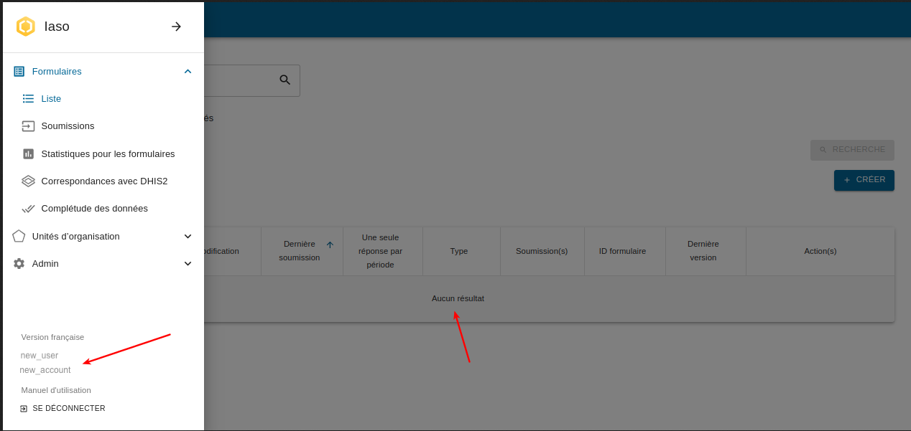
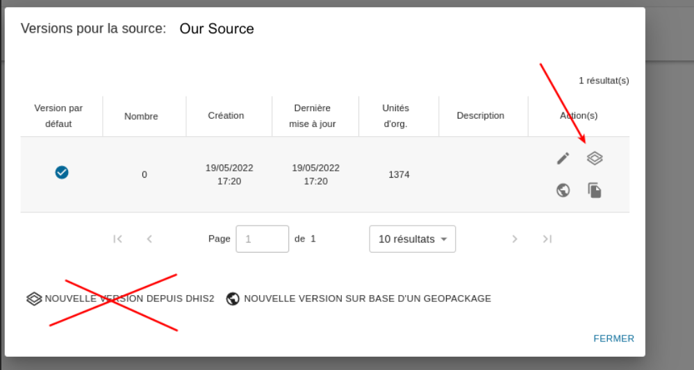

1. Configurar una cuenta IASO vacía#
Encuentre a alguien con derechos de acceso apropiados (se requiere administrador django)
https://iaso.bluesquare.org/api/setupaccount/

Use y almacene el usuario/contraseña en un gestor de contraseñas
2. Crear un DHIS2 dedicado para IASO#
Queremos mantener registro de qué app está cambiando qué datos/metadatos de dhis2 así que por favor no use el usuario principal/predeterminado "admin" sino uno dedicado.
-
Vaya al módulo "Users / Utilisateurs" de dhis2
-
"Duplicar el admin"

- Genere una contraseña con gestor de contraseñas (necesita al menos un carácter especial)

3. Iniciar sesión en IASO con el usuario creado en el paso 1#
Verifique que la cuenta esté vacía o en el menú izquierdo
Evite hacer los siguientes pasos con el admin django, ya que puede llevar a accidentes industriales: el usuario puede estar vinculado a una cuenta/proyecto totalmente diferente y podría terminar con la pirámide de un proyecto llena de orgunits de otro país.

4. Agregar un nuevo proyecto#
Use la nomenclatura usada por los clientes si aplica.

Promueva "buen comportamiento" habilitando la autenticación por defecto

5. Crear una nueva fuente de datos#
Use el usuario creado en el paso 2
Haga que la fuente sea la predeterminada

6. Crear una nueva (primera) Versión de la fuente de datos#
Puede importar esta primera versión

7. Actualizando la pirámide#
IMPORTANTE note que si "agrega nuevas orgunits o agrega/cambia grupos" esa no es la pantalla del paso anterior que debe usar
sino el botón "actualizar" en la versión predeterminada !

Si crea una nueva versión "cámbiela a la versión predeterminada" esta detección se romperá ya que los envíos entrantes se adjuntarán a diferentes id de orgUnit de IASO.
8. ¿Qué sigue?#
-
Use la App móvil en la tienda y proporcione el appId/usuario/contraseña
-
Comience a configurar los formularios de IASO
-
¡trate de ser consistente y a prueba de futuro en la nomenclatura!
esto es bueno :
``` PMA - Qualité 01 - Indicateurs généraux PMA - Qualité 02 - Plan financier PMA - Qualité 03 - Consultation Postnatale ... PMA - Qualité 10 - Vaccination PMA - Qualité 11 - Accouchements PMA - Quantité PCA - Qualité ...
esto es **MALO** :
PMA - Qualité 1 - Indicateurs généraux PMA - qualité 10 - Vaccination PMA - Qualité 11 - accouchements PMA - qualité 2 - plan financier PMA - Qualité 3 - consultation Postnatale... ... PMA - Quantité Qualité - PCA - ... ``` - las computadoras son realmente malas para ordenar en orden natural así que prefiera 01 02 03 - sea consistente en el uso de mayúsculas/minúsculas - sea consistente prefijando el tipo de entidad (no necesita poner el país en él, tenemos espacio limitado en la app móvil)